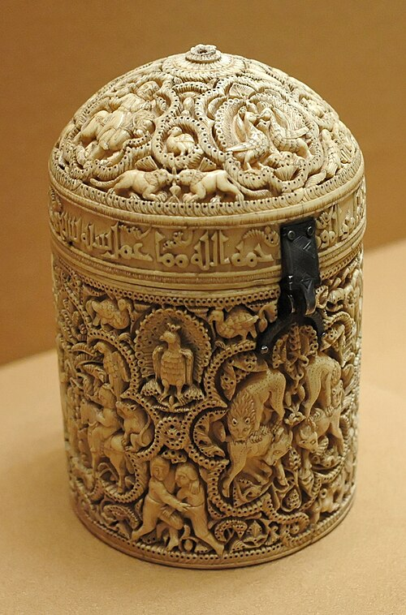

Pyxis of al-Mughira
A small ivory box made in Córdoba for a teenage Umayyad prince. Every surface is carved with figures — musicians, lions, lovers, a man stealing eggs from an eagle's nest. The inscriptions include barely-veiled warnings about the instability of royal succession. Al-Mughira was executed by strangulation eight years later.